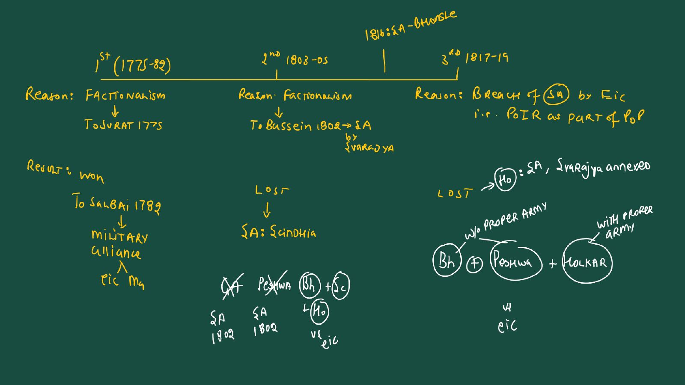
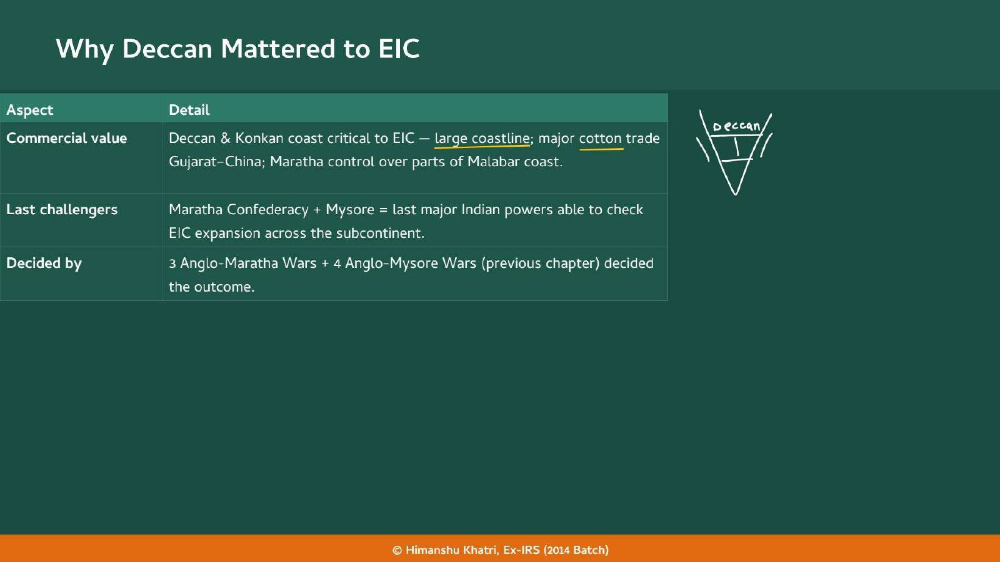
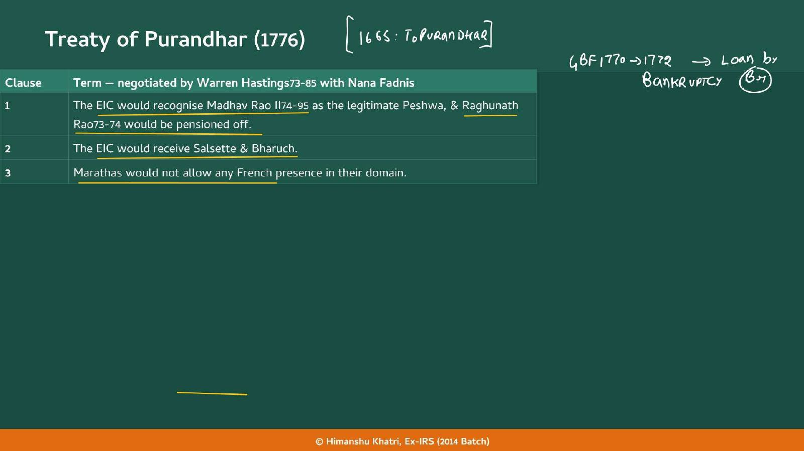
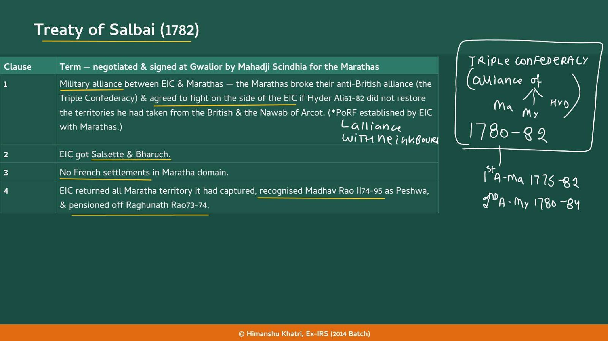
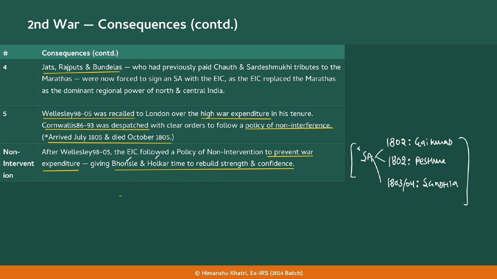
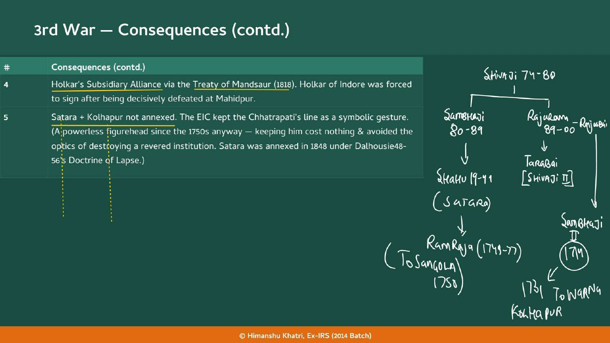
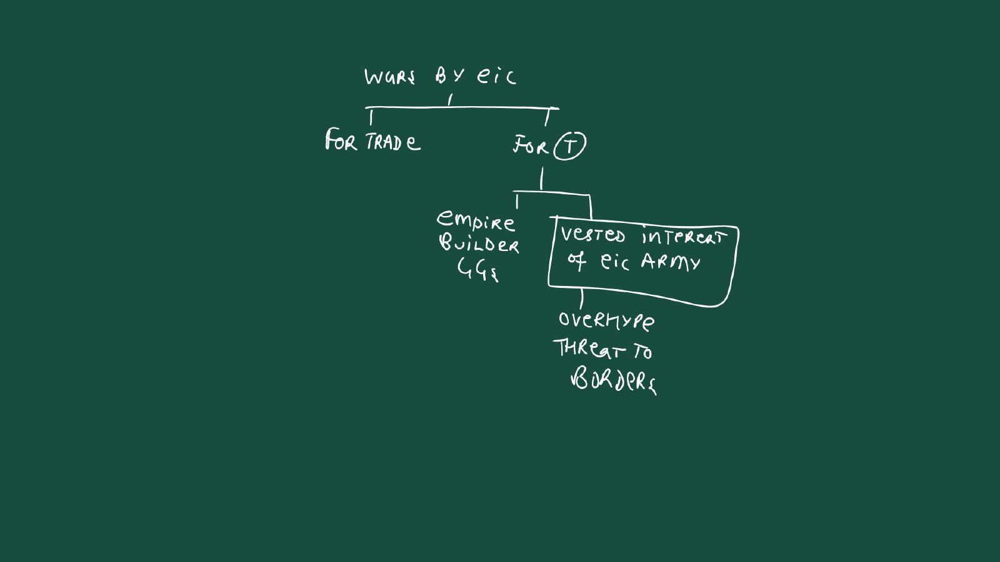
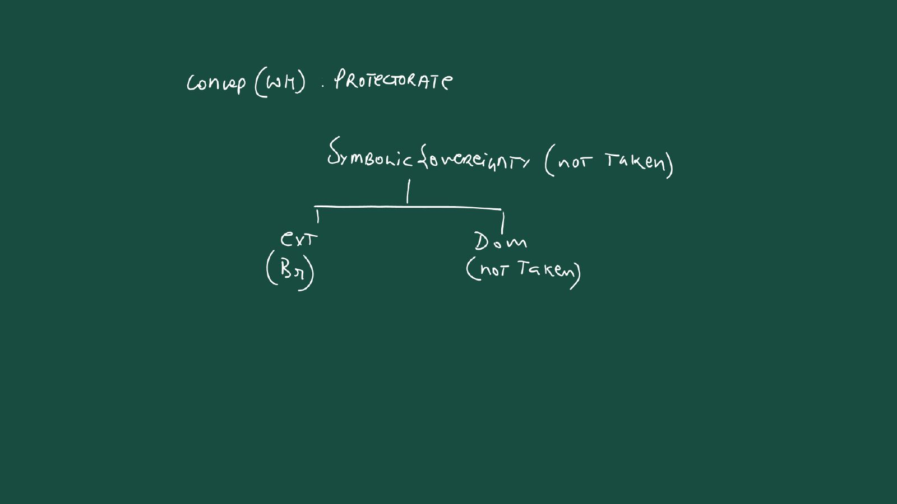
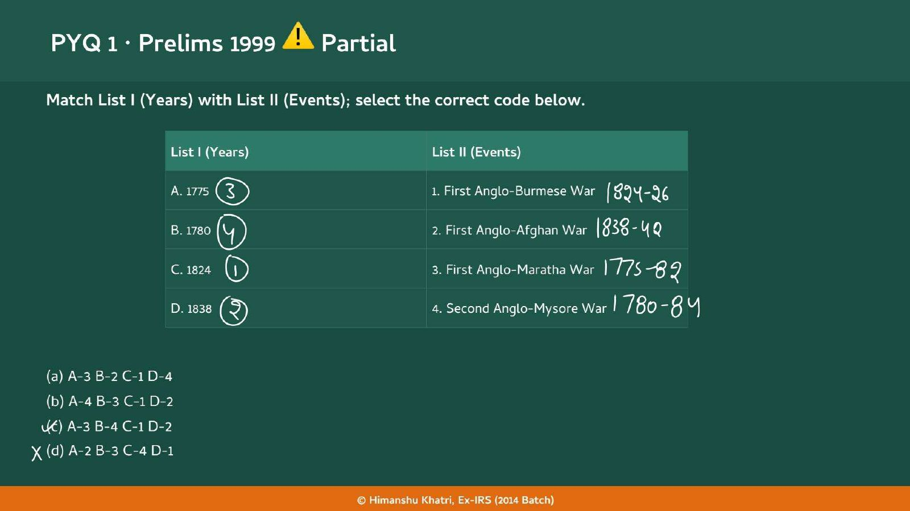

Chapter 4: The Marathas, Panipat 1761
The Chhatrapati family tree (Warna 1731, Sangola 1750), Svarajya and the Peshwas, the Chauth and Sardeshmukhi that the EIC now takes over, and Prelims 2010 on Abdali's trigger.
| Year | Paper | Topic | Answer |
|---|---|---|---|
| 1999 | Prelims | Prelims 1999 | (C) A-3 B-4 C-1 D-2 |
| 2004 | Prelims | Prelims 2004 | (D) 2 and 3 |
| 2010 | Prelims | Prelims 2010 | (A) He wanted to avenge the expulsion by Marathas of his Viceroy Timur Shah from Lahore |
Factionalism pulled the EIC in at Surat, the Subsidiary Alliance disarmed the Peshwa, the loophole of 1816 ended in war, and by 1818 the Peshwaship was gone; the Marathas lost more from their own structure than from the EIC's strength.
Read it like a film first. Then go to the notes: every fact below is expanded there.
Story spine: A divided Maratha house kept inviting the EIC in (Surat 1775, Bassein 1802), the Subsidiary Alliance then took away the Peshwa's own army, and the EIC's Paramountcy turned the loophole of 1816 into the war that ended the Peshwaship in 1818.
| Character | Role in the story | Hook |
|---|---|---|
| Raghunath Rao 73-74 | Peshwa removed in 1774; signed Surat 1775 to get EIC help | The Claimant |
| Nana Fadnis | Led the Baarbhai Conspiracy; dealt with Warren Hastings at Purandhar; held the Confederacy until 1800 | The Glue |
| Warren Hastings 73-85 | Governor General who overturned Surat and signed Purandhar 1776 | The Thrifty Cancel |
| Mahadji Scindhia | Victor at Wadgaon; signed Salbai 1782 at Gwalior; died 1794 | The Signer at Gwalior |
| Bajirao II 96-18 | Peshwa from 1796; signed Bassein 1802; surrendered June 1818; pensioned to Bithur | The Puppet Peshwa |
| Yashwantrao Holkar | Avenged Vithoji Rao Holkar, defeating the Peshwa and Scindhia in October 1802 | The Avenger |
| Wellesley 98-05 | Empire-builder GG behind Bassein; recalled for war expenditure | The Empire-Builder |
| Arthur Wellesley | Commander at Assaye 1803: his toughest fight, harder than Napoleon | Toughest Fight |
| Francis Hastings 13-23 | Crushed the Pindaris; launched Paramountcy; led the 3rd war | The Paramount GG |
| Appa Sahib | Bhonsle regent; signed Nagpur 1816, hired Arab and Rohilla mercenaries; lost at Sitabuldi | The Loophole Regent |
| Nana Sahib | Adopted son of Bajirao II 96-18; led the Kanpur revolt in 1857 | The Pension's Son |
| Dalhousie 48-56 | Annexed Satara in 1848 under the Doctrine of Lapse | The Lapse Man |
| Auckland 36-42 | Forward Policy: Shah Shuja against Dost Mohammed; recalled after the disaster | The Forward Man |
| Charles Napier | Commander in Sindh 1843; sent the dispatch Peccavi | Peccavi |
| Key term | In plain words |
|---|---|
| Factionalism | Splits inside the Maratha house; the teacher's reason for the 1st and 2nd wars |
| Baarbhai Conspiracy | 1774: Nana Fadnis and eleven other ministers remove Raghunath Rao 73-74 |
| Salsette and Bassein | Land near Mumbai that Raghunath Rao 73-74 promised the EIC at Surat (1775) |
| Pension | Raghunath Rao 73-74 was pensioned in 1776 and 1782; a pensioned rival can be used in later succession disputes |
| Triple Confederacy | 1780-82 alliance of Marathas, Mysore and Hyderabad, broken by Salbai |
| Subsidiary Alliance (SA) | The EIC army replaces the State's own army; signed by Gaikwad, Peshwa, Scindhia, Bhonsle, Holkar |
| Mini alliance | Bhonsle's 1803-05 deal: territory ceded and an EIC army he pays for, not the full SA |
| Pindaris | Disbanded soldiers of Scindhia and Holkar who raided the Northern Sarkars and Madras Presidency |
| Policy of Paramountcy (PoP) | 1813-58: the EIC is the supreme power and will do anything, even annex, to protect its interests |
| Senapati | Commander-in-Chief; the role Appa Sahib played at Sitabuldi |
| Protectorate | State loses external sovereignty to Britain but keeps symbolic and domestic sovereignty, like an SA |
| Peccavi | Napier's one-word dispatch after Sindh: 'I have sinned', a pun on 'I have Sindh' |
Remember it as Factionalism pulled the EIC in at Surat, the SA disarmed the Peshwa, the loophole of 1816 led to war, and the Marathas lost from their own structure more than from EIC strength.
| Year and paper | What was asked | The answer or trap | Where in this chapter | |
|---|---|---|---|---|
| Prelims 1999 | Match years (A. 1775, B. 1780, C. 1824, D. 1838) with events (1. First Anglo-Burmese War, 2. First Anglo-Afghan War, 3. First Anglo-Maratha War, 4. Second Anglo-Mysore War) | (c) A-3 B-4 C-1 D-2. Use the year the war broke out, not the year it ended. The teacher wrote 1824-26, 1838-42, 1775-82, 1780-84 beside the events, circled 3, 4, 1, 2, ticked (c) and crossed (d) | Section 2 (1775) and Section 9 (Burma, Afghanistan); the Mysore war is in [[12 | Chapter 12]] |
| Prelims 2004 | Which pairs are correctly matched: A. AD 1767-69 First Anglo-Maratha War, B. AD 1790-92 Third Mysore War, C. AD 1824-26 First Anglo-Burmese War, D. AD 1845-46 Second Sikh War? Options: (a) 2 and 4 (b) 3 and 4 (c) 1 and 2 (d) 2 and 3 | (d) 2 and 3. B and C are right. A is wrong: 1767-69 is the First Anglo-Mysore War (the First Anglo-Maratha War began 1775). D is wrong: 1845-46 is the First Anglo-Sikh War (the Second was 1848-49). No ink on the slide | Section 2 and Section 9 | |
| Prelims 2010 | The immediate reason for Ahmad Shah Abdali 47-72 to invade India and fight the Third Battle of Panipat | (a) He wanted to avenge the Marathas' expulsion of his Viceroy Timur Shah from Lahore. (b) is wrong: Adina Beg Khan invited the Marathas, not Abdali. The teacher only wrote "1761" on the slide. The topic belongs to [[4 | Chapter 4]] | Section 10 |
| Prelims (year not given) | The handout says the Battle of Sitabuldi (November 1817) has been tested in UPSC Prelims | Two points to carry: (i) Appa Sahib signed the Subsidiary Alliance in 1816 and still fought in 1817: the SA did not prevent the war, its terms caused it. (ii) The "disbanded army" clause was bypassed with Arab and Rohilla mercenaries hired as internal-security retainers | Section 6 | |
| Mains | No Mains PYQ is shown on the slides and the bank has none for this chapter | Two book practice Mains questions are in the bank (why the Marathas lost; Subsidiary Alliance against Paramountcy). Skeletons are written below from the notes only | The end of this block |


| Clause | Term |
|---|---|
| 1 | The EIC would recognise Madhav Rao II 74-95 as the legitimate Peshwa, and Raghunath Rao 73-74 would be pensioned off |
| 2 | The EIC would receive Salsette and Bharuch |
| 3 | The Marathas would not allow any French presence in their domain |


| Clause | Term |
|---|---|
| 1 | Military alliance between the EIC and the Marathas. The Marathas broke their anti-British alliance (the Triple Confederacy) and agreed to fight on the side of the EIC if Hyder Ali 61-82 did not restore the territories he had taken from the British and the Nawab of Arcot. (The handout: PoRF established by the EIC with the Marathas.) |
| 2 | The EIC got Salsette and Bharuch |
| 3 | No French settlements in Maratha domain |
| 4 | The EIC returned all Maratha territory it had captured, recognised Madhav Rao II 74-95 as Peshwa and pensioned off Raghunath Rao 73-74 |
| Year | What happened |
|---|---|
| 1794 | Mahadji Scindhia, who had dominated Maratha politics, dies |
| 1795 | Madhav Rao II 74-95 commits suicide |
| 1796 | Bajirao II 96-18 becomes Peshwa (the handout: Peshwa from 1796, formally tenured 1796-1818) |
| 1800 | Nana Fadnis dies: the one man who had consistently held the Confederacy together for two decades; factionalism accelerates sharply |

| Event | Detail |
|---|---|
| Force size | The EIC deployed its largest military force ever in India: about 1.2 lakh troops |
| Battle of Sitabuldi (Nov 1817) | Appa Sahib defeated (Section 6.1) |
| Battle of Mahidpur (Dec 1817) | Holkar decisively defeated |
| Battle of Koregaon (1 Jan 1818) | A small EIC force of Mahar soldiers held off a much larger Peshwa army. Later commemorated as the Bhima-Koregaon Victory Pillar |
| Surrender (June 1818) | Peshwa Bajirao II 96-18 surrendered |



| War | Years | Governor General | Treaty or result |
|---|---|---|---|
| Anglo-Nepal | 1814-16 | Francis Hastings 13-23 | Treaty of Sugauli (1816): Nepal became a British Protectorate; it lost Kumaon, Garhwal and the Terai to British India |
| 1st Anglo-Burmese | 1824-26 | Amherst 23-28 | Burma was expanding territory, giving the EIC the chance to overhype the threat to borders. Treaty of Yandabo (1826) annexed Assam, Nagaland and parts of lower Burma (Arakan and Tenasserim); Cachar annexed in 1830. The Ahom Kingdom of Assam had supported the EIC: in a stab in the back it was annexed too |
| Coorg War | 1834 | William Bentinck 28-35 | On grounds of maladministration by Vira Raja. Massive coffee plantations were set up after annexation |
| War | Years | Governor General | Result | |
|---|---|---|---|---|
| 1st and 2nd Anglo-Sikh Wars | 1845-46, 1848-49 | Hardinge 44-48 and Dalhousie 48-56 | Led to the annexation of Punjab in 1849 (later chapter, [[14 | Chapter 14]]) |
| 2nd Anglo-Burmese War | 1852-53 | Dalhousie 48-56 | Pegu (lower Burma) annexed (later chapter) |

| Feature | 1st war (1775-82) | 2nd war (1803-05) | 3rd war (1817-19) |
|---|---|---|---|
| Reason (teacher) | Factionalism | Factionalism | Breach of SA by the EIC (PoIR as part of PoP) |
| Trigger treaty | Surat 1775 (Raghunath Rao 73-74) | Bassein Dec 1802 (Bajirao II 96-18) | Nagpur 1816 (Appa Sahib) |
| EIC head | Warren Hastings 73-85 | Wellesley 98-05 | Francis Hastings 13-23 |
| Key battle | Wadgaon 1779 (EIC lost) | Assaye 1803 | Sitabuldi, Mahidpur, Koregaon |
| Result | Salbai 1782: military alliance, Marathas get territory back | Marathas lost; SA for Scindhia; Bhonsle mini alliance | Marathas lost; Peshwaship abolished; Svarajya annexed |
| Marathas on the field | Nana Fadnis, Mahadji Scindhia, Tukoji Rao Holkar | Scindhia, Holkar, Bhonsle united | Bajirao II 96-18, Appa Sahib, Holkar |
| Year | What happened |
|---|---|
| 1773 | Narayan Rao 72-73 is murdered; Raghunath Rao 73-74 becomes Peshwa |
| 1774 | Baarbhai Conspiracy: Nana Fadnis and eleven ministers remove Raghunath Rao 73-74 ★ |
| 1775 | Treaty of Surat: EIC help for Raghunath Rao 73-74 for Salsette, Bassein and revenue from Bharuch and Surat; 1st Anglo-Maratha War begins ★ |
| 1776 | Treaty of Purandhar (Warren Hastings 73-85 with Nana Fadnis): Madhav Rao II 74-95 recognised, Salsette and Bharuch to the EIC, no French ★ |
| 1779 | Battle of Wadgaon: Nana Fadnis, Mahadji Scindhia and Tukoji Rao Holkar defeat the EIC and Raghunath Rao 73-74 |
| 1780 | 2nd Anglo-Mysore War begins (to 1784); Triple Confederacy of Marathas, Mysore and Hyderabad (1780-82) |
| 1782 | Treaty of Salbai, signed at Gwalior by Mahadji Scindhia: military alliance, Salsette and Bharuch, no French; ends the 1st war ★ |
| 1794 | Mahadji Scindhia dies |
| 1795 | Madhav Rao II 74-95 commits suicide |
| 1796 | Bajirao II 96-18 becomes Peshwa |
| 1800 | Nana Fadnis dies |
| 1801 | Vithoji Rao Holkar executed on the orders of Bajirao II 96-18 |
| 1802 | June: Treaty of Cambay (Gaikwad SA); October: Yashwantrao Holkar defeats the Peshwa and Daulat Rao Scindhia; December: Treaty of Bassein (SA) ★ |
| 1803 | 2nd Anglo-Maratha War (1803-05); Battle of Assaye (Arthur Wellesley); Scindhia loses all north of the Yamuna ★ |
| 1805 | Wellesley 98-05 recalled; Cornwallis 86-93 arrives in July and dies in October |
| 1806 | Vellore Mutiny under George Barlow (Acting GG 1805-07) |
| 1813 | Policy of Paramountcy begins (to 1858) under Francis Hastings 13-23 ★ |
| 1814 | Anglo-Nepal War begins (to 1816) |
| 1816 | Treaty of Sugauli (Nepal a protectorate); Treaty of Nagpur: Appa Sahib signs SA ★ |
| 1817 | November: Battle of Sitabuldi; December: Battle of Mahidpur; 3rd Anglo-Maratha War (1817-19) ★ |
| 1818 | 1 January: Battle of Koregaon; June: Bajirao II 96-18 surrenders; Treaty of Mandsaur (Holkar SA); Peshwaship abolished, Bithur ★ |
| 1824 | 1st Anglo-Burmese War begins (to 1826), Amherst 23-28 |
| 1826 | Treaty of Yandabo: Assam, Nagaland, Arakan, Tenasserim annexed |
| 1830 | Cachar annexed |
| 1834 | Coorg War, William Bentinck 28-35: Vira Raja's maladministration |
| 1838 | 1st Anglo-Afghan War begins (to 1842), Auckland 36-42; 20,000 dead, Rs 1.5 crore ★ |
| 1843 | Annexation of Sindh by Ellenborough 42-44; Napier's "Peccavi" ★ |
| 1845 | 1st Anglo-Sikh War (1845-46), Hardinge 44-48 |
| 1848 | Satara annexed under Dalhousie 48-56's Doctrine of Lapse; 2nd Anglo-Sikh War (1848-49) ★ |
| 1852 | 2nd Anglo-Burmese War (1852-53): Pegu annexed |
| 1857 | Nana Sahib, adopted son of Bajirao II 96-18, leads the Kanpur revolt |
The Chhatrapati family tree (Warna 1731, Sangola 1750), Svarajya and the Peshwas, the Chauth and Sardeshmukhi that the EIC now takes over, and Prelims 2010 on Abdali's trigger.
The 2nd Anglo-Mysore War (1780-84) overlaps the 1st Maratha War and the Triple Confederacy; the 1767-69 war is the trap in Prelims 2004; Mysore and the Marathas were the last two powers.
Bassein 1802, Cambay 1802, the 1803/04, 1816 and 1818 alliances and the ten signatories; Wellesley 98-05 is the architect.
Mini Subsidiary Alliance with Awadh 1765, Ring Fence, Indirect Rule, Bhonsle's Orissa and Bengal raids, the 1772 bankruptcy behind Warren Hastings 73-85's thrift.
The same pattern of succession dispute, a losing claimant and European help; Hyderabad and Arcot.
Satara 1848 under the Doctrine of Lapse, the Sikh wars and Punjab 1849, the 2nd Burmese War and Pegu; the five-policy arc continues there.
Nana Sahib of Bithur, adopted son of Bajirao II 96-18, and the Vellore Mutiny as its "prelude".
The Emperor's six masters ending with the EIC's Resident in Delhi (Shah Alam II 60-06).
Read the question, answer in your head, then tap to check.
| Why did the Deccan matter to the EIC? | Large coastline; Gujarat-China cotton trade; Maratha control over parts of the Malabar coast. The Marathas and Mysore were the last major powers able to check the EIC. |
| What was the pattern behind all three Maratha wars? | Factionalism: a succession or power dispute, a losing claimant, and the EIC offering help for territory or influence. A divided Maratha house was the EIC's most reliable ally. |
| What was the Baarbhai Conspiracy (1774)? | Nana Fadnis and eleven other ministers of the Peshwa's council removed Raghunath Rao 73-74, who had become Peshwa in 1773 after the murder of Narayan Rao 72-73. |
| What did the Treaty of Surat (1775) give the EIC? | For helping Raghunath Rao 73-74 regain the Peshwaship: Salsette and Bassein (Vasai) plus some revenue from Bharuch and Surat. Signed with the Governor of Bombay, William Hornby. |
| Why did Warren Hastings 73-85 overturn Surat? | To avoid expensive war expenditure. He negotiated Purandhar (1776) with Nana Fadnis. |
| What were the clauses of Purandhar (1776)? | Madhav Rao II 74-95 recognised and Raghunath Rao 73-74 pensioned; Salsette and Bharuch to the EIC; no French presence in Maratha domain. |
| Why did the Purandhar peace collapse? | Bombay kept sheltering Raghunath Rao 73-74; Nana Fadnis offered the French a port; talks collapsed. The teacher: an example of factionalism within the EIC. |
| Who won at Wadgaon (1779)? | Nana Fadnis, Mahadji Scindhia and Tukoji Rao Holkar defeated the EIC and Raghunath Rao 73-74; the war then stalled. |
| What were the terms of the Treaty of Salbai (1782)? | Military alliance (Marathas fight for the EIC if Hyder Ali 61-82 did not restore territory); Salsette and Bharuch to the EIC; no French settlements; territory returned, Madhav Rao II 74-95 recognised, Raghunath Rao 73-74 pensioned. Signed at Gwalior by Mahadji Scindhia. |
| What was the Triple Confederacy (teacher's box)? | An alliance of Marathas, Mysore and Hyderabad (1780-82), behind the 1st Anglo-Maratha War (1775-82) and the 2nd Anglo-Mysore War (1780-84). |
| Why were pensions a deliberate EIC practice? | A pensioned rival could be used in future succession disputes. |
| What happened in the inter-war period (1782-1803)? | Maratha decline: Mahadji Scindhia d. 1794; Madhav Rao II 74-95 suicide 1795; Bajirao II 96-18 Peshwa 1796; Nana Fadnis d. 1800, after which factionalism accelerated. |
| How did the 2nd Anglo-Maratha War begin? | Vithoji Rao Holkar was executed on the Peshwa's orders (1801); Yashwantrao Holkar defeated the Peshwa and Daulat Rao Scindhia (Oct 1802); Bajirao II 96-18 fled and signed the Treaty of Bassein (Dec 1802), an SA; Scindhia, Holkar and Bhonsle then united. |
| Who signed an SA before the Peshwa? | The Gaikwad, in June 1802 (Treaty of Cambay), for EIC help in a succession dispute. |
| Why is Assaye (1803) famous? | Arthur Wellesley with his Royal regiment and the EIC army fought the Marathas; he called it the toughest fight of his career, harder than anything against Napoleon. |
| What did Scindhia lose in the 2nd war? | All territory north of the Yamuna including Delhi and Agra, and all of Gujarat; he signed an SA; a British Resident in Delhi put the Emperor Shah Alam II 60-06 under indirect EIC control. |
| What happened to Bhonsle of Nagpur after the 2nd war? | He lost Orissa and refused the full SA, signing only a mini alliance (territory ceded, an EIC army at his cost). The full SA came in 1816 (Treaty of Nagpur). |
| Why was Wellesley 98-05 recalled? | The high war expenditure of his tenure; Cornwallis 86-93 was sent for non-interference (arrived July 1805, died October 1805). |
| What was the Vellore Mutiny (1806)? | An uprising in Vellore Fort (north Tamil Nadu) under George Barlow (Acting GG 1805-07), against dress codes that banned tilak and turban and imposed a leather (cow or pig skin) cockade; the "Prelude to 1857". |
| Who were the Pindaris and who crushed them? | Disbanded soldiers of Scindhia and Holkar raiding the Northern Sarkars and Madras Presidency; crushed by Francis Hastings 13-23. |
| What is the Policy of Paramountcy? | 1813-58, under Francis Hastings 13-23: the EIC is the paramount or supreme power and will do anything, even annex, to protect its interests; Residents treat rulers like Bajirao II 96-18 as puppets. |
| How did Appa Sahib beat the Treaty of Nagpur (1816)? | The army had to be disbanded but retainers and police were allowed; he secretly recruited Arab and Rohilla mercenaries (and had Parsoji murdered to rule). His SA did not prevent war: its terms caused it (Prelims). |
| Name the battles of the 3rd Anglo-Maratha War. | Sitabuldi (Nov 1817, Appa Sahib); Mahidpur (Dec 1817, Holkar); Koregaon (1 Jan 1818, Peshwa; Mahar soldiers, Bhima-Koregaon pillar); Peshwa surrendered June 1818. The EIC used its largest force ever, about 1.2 lakh. |
| What were the results of the 3rd war? | Peshwaship abolished, Bajirao II 96-18 pensioned to Bithur; Svarajya into the Bombay Presidency; Appa Sahib deposed; Holkar's SA at Mandsaur 1818; Satara and Kolhapur not annexed. |
| Why were Satara and Kolhapur spared in 1818? | The Chhatrapati was a powerless figurehead since the 1750s; keeping him cost nothing and avoided the optics of destroying a revered institution. Satara was annexed in 1848 under Dalhousie 48-56's Doctrine of Lapse. |
| List the four reasons why the Marathas lost. | Factionalism; absence of unified command (Scindhia, Holkar, Bhonsle, Gaikwad); EIC's superior finances; naval and logistics advantage (Konkan blockade, sea and roads). |
| Mains practice: Why did the Marathas lose despite numerical strength? (150 words) | Intro: they fell from their own structure more than the EIC's strength. Body: factionalism (Surat vs Purandhar, Bassein), no unified command, EIC finances, naval and logistics edge, the SA loophole. Closing: a divided Maratha house was the EIC's most reliable ally. |
| Mains practice: Subsidiary Alliance against the Policy of Paramountcy (150 words) | Intro: SA bought control with promised help; Paramountcy openly made the EIC supreme. Body: SA = EIC army replaces State army (Bassein 1802); PoP 1813-58 = supreme, even annexation, Residents treat rulers as puppets; the loophole of 1816 shows the gap; trajectory SA, PoP, annexation (Svarajya 1818, Satara 1848). Closing: each step left less sovereignty. |
| Two kinds of EIC wars (teacher's tree)? | For trade, or for T (territory); territory wars are driven by empire-builder Governor Generals or by the vested interest of the EIC army, which overhypes the threat to borders. |
| What is a protectorate? | Symbolic sovereignty not taken; external functions go to Britain; domestic functions not taken. Like a Subsidiary Alliance. Nepal after Sugauli (1816). |
| Anglo-Nepal War? | 1814-16, Francis Hastings 13-23; Treaty of Sugauli 1816: Nepal a British Protectorate; lost Kumaon, Garhwal and the Terai. |
| 1st Anglo-Burmese War? | 1824-26, Amherst 23-28; Treaty of Yandabo 1826 annexed Assam, Nagaland, Arakan and Tenasserim; Cachar annexed 1830; Ahom Assam, an EIC ally, was stabbed in the back. |
| Why was Coorg annexed (1834)? | Under William Bentinck 28-35, on grounds of maladministration by Vira Raja; coffee plantations followed. |
| 1st Anglo-Afghan War (1838-42)? | Great Game (Britain vs Russia, over Central Asia); Auckland 36-42's Forward Policy to install Shah Shuja against Dost Mohammed; 20,000 dead, Rs 1.5 crore, one European survivor of the Kabul retreat; Auckland 36-42 recalled, Ellenborough 42-44 ended it. |
| Annexation of Sindh (1843)? | Ellenborough 42-44; taken from the Char Yaar (four Baloch chiefs of the Talpur dynasty) without justification; commander Sir Charles Napier; "Peccavi" = "I have Sindh". |
| Which wars ended in Punjab 1849 and Pegu? | 1st and 2nd Anglo-Sikh Wars (1845-46, 1848-49; Hardinge 44-48 and Dalhousie 48-56) led to Punjab's annexation in 1849; 2nd Anglo-Burmese War (1852-53; Dalhousie 48-56) annexed Pegu. |
| Prelims 1999 trick? | Match wars by their start year: 1775 Maratha I (3), 1780 Mysore II (4), 1824 Burmese I (1), 1838 Afghan I (2): option (c). |
| Prelims 2004 trick? | Only B (1790-92 Mysore III) and C (1824-26 Burmese I) are right: 1767-69 is Mysore I; 1845-46 is Sikh I. Answer (d). |
Tap the card to flip.